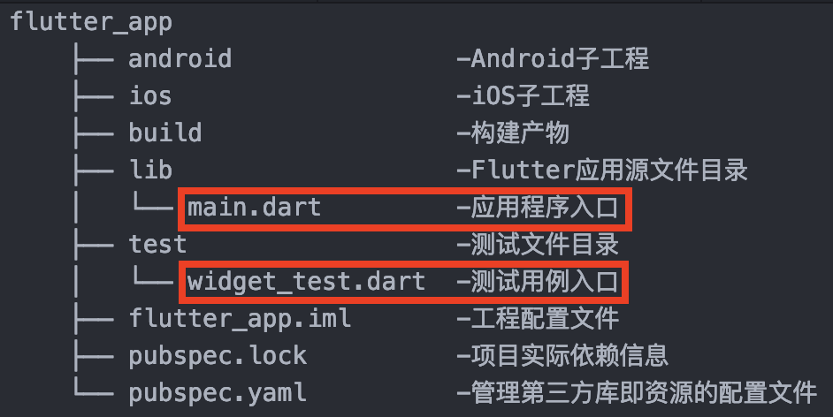
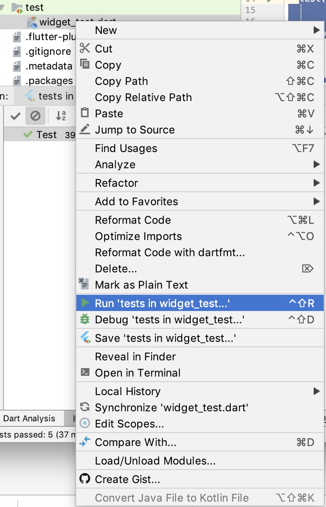
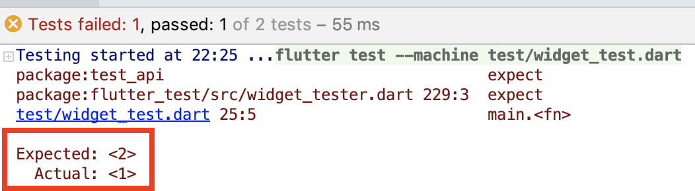
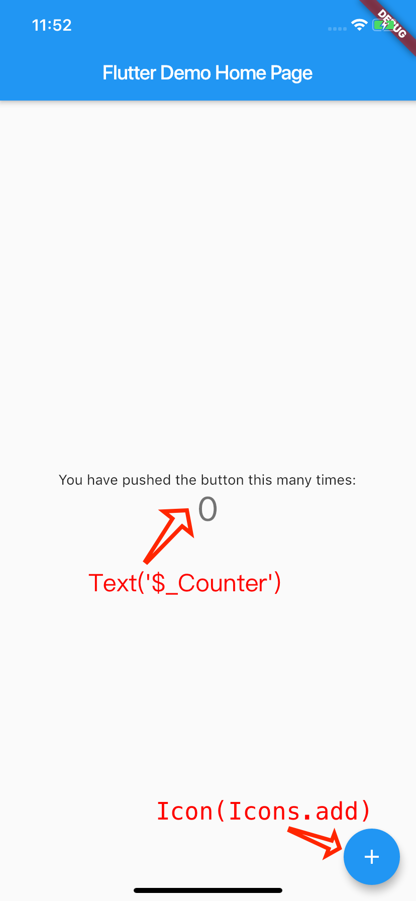

你好，我是陈航。
在上一篇文章中，我与你分享了如何分析并优化 Flutter 应用的性能问题。通过在真机上以分析模式运行应用，我们可以借助于性能图层的帮助，找到引起性能瓶颈的两类问题，即 GPU 渲染问题和 CPU 执行耗时问题。然后，我们就可以使用 Flutter 提供的渲染开关和 CPU 帧图（火焰图），来检查应用中是否存在过度渲染或是代码执行耗时长的情况，从而去定位并着手解决应用的性能问题了。
在完成了应用的开发工作，并解决了代码中的逻辑问题和性能问题之后，接下来我们就需要测试验收应用的各项功能表现了。移动应用的测试工作量通常很大，这是因为为了验证真实用户的使用体验，测试往往需要跨越多个平台（Android/iOS）及不同的物理设备手动完成。
随着产品功能不断迭代累积，测试工作量和复杂度也随之大幅增长，手动测试变得越来越困难。那么，在为产品添加新功能，或者修改已有功能时，如何才能确保应用可以继续正常工作呢？
答案是，通过编写自动化测试用例。
所谓自动化测试，是把由人驱动的测试行为改为由机器执行。具体来说就是，通过精心设计的测试用例，由机器按照执行步骤对应用进行自动测试，并输出执行结果，最后根据测试用例定义的规则确定结果是否符合预期。
也就是说，自动化测试将重复的、机械的人工操作变为自动化的验证步骤，极大的节省人力、时间和硬件资源，从而提高了测试效率。
在自动化测试用例的编写上，Flutter 提供了包括单元测试和 UI 测试的能力。其中，单元测试可以方便地验证单个函数、方法或类的行为，而 UI 测试则提供了与 Widget 进行交互的能力，确认其功能是否符合预期。
接下来，我们就具体看看这两种自动化测试用例的用法吧。
单元测试
单元测试是指，对软件中的最小可测试单元进行验证的方式，并通过验证结果来确定最小单元的行为是否与预期一致。所谓最小可测试单元，一般来说，就是人为规定的、最小的被测功能模块，比如语句、函数、方法或类。
在 Flutter 中编写单元测试用例，我们可以在 pubspec.yaml 文件中使用 test 包来完成。其中，test 包提供了编写单元测试用例的核心框架，即定义、执行和验证。如下代码所示，就是 test 包的用法：
dev_dependencies: test:备注：test 包的声明需要在 dev_dependencies 下完成，在这个标签下面定义的包只会在开发模式生效。
与 Flutter 应用通过 main 函数定义程序入口相同，Flutter 单元测试用例也是通过 main 函数来定义测试入口的。不过，这两个程序入口的目录位置有些区别：应用程序的入口位于工程中的 lib 目录下，而测试用例的入口位于工程中的 test 目录下。
一个有着单元测试用例的 Flutter 工程目录结构，如下所示：

接下来，我们就可以在 main.dart 中声明一个用来测试的类了。在下面的例子中，我们声明了一个计数器类 Counter，这个类可以支持以递增或递减的方式修改计数值 count：
class Counter { int count = 0; void increase() => count++; void decrease() => count--;}实现完待测试的类，我们就可以为它编写测试用例了。在 Flutter 中，测试用例的声明包含定义、执行和验证三个部分：定义和执行决定了被测试对象提供的、需要验证的最小可测单元；而验证则需要使用 expect 函数，将最小可测单元的执行结果与预期进行比较。
所以，在 Flutter 中编写一个测试用例，通常包含以下两大步骤：
- 实现一个包含定义、执行和验证步骤的测试用例；
- 将其包装在 test 内部，test 是 Flutter 提供的测试用例封装类。
在下面的例子中，我们定义了两个测试用例，其中第一个用例用来验证调用 increase 函数后的计数器值是否为 1，而第二个用例则用来判断 1+1 是否等于 2：
import 'package:test/test.dart';import 'package:flutter_app/main.dart'; void main() { // 第一个用例，判断 Counter 对象调用 increase 方法后是否等于 1 test('Increase a counter value should be 1', () { final counter = Counter(); counter.increase(); expect(counter.value, 1); }); // 第二个用例，判断 1+1 是否等于 2 test('1+1 should be 2', () { expect(1+1, 2); });}选择 widget_test.dart 文件，在右键弹出的菜单中选择“Run ‘tests in widget_test’”，就可以启动测试用例了。

稍等片刻，控制台就会输出测试用例的执行结果了。当然，这两个用例都能通过测试：
22:05 Tests passed: 2如果测试用例的执行结果是不通过，Flutter 会给我们怎样的提示呢？我们试着修改一下第一个计数器递增的用例，将它的期望结果改为 2：
test('Increase a counter value should be 1', () { final counter = Counter(); counter.increase(); expect(counter.value, 2);// 判断 Counter 对象调用 increase 后是否等于 2});运行测试用例，可以看到，Flutter 在执行完计数器的递增方法后，发现其结果 1 与预期的 2 不匹配，于是报错：

上面的示例演示了单个测试用例的编写方法，而如果有多个测试用例，它们之间是存在关联关系的，我们可以在最外层使用 group 将它们组合在一起。
在下面的例子中，我们定义了计数器递增和计数器递减两个用例，验证递增的结果是否等于 1 的同时判断递减的结果是否等于 -1，并把它们组合在了一起：
import 'package:test/test.dart';import 'package:counter_app/counter.dart';void main() { // 组合测试用例，判断 Counter 对象调用 increase 方法后是否等于 1，并且判断 Counter 对象调用 decrease 方法后是否等于 -1 group('Counter', () { test('Increase a counter value should be 1', () { final counter = Counter(); counter.increase(); expect(counter.value, 1); }); test('Decrease a counter value should be -1', () { final counter = Counter(); counter.decrease(); expect(counter.value, -1); }); });}同样的，这两个测试用例的执行结果也是通过。
在对程序的内部功能进行单元测试时，我们还可能需要从外部依赖（比如 Web 服务）获取需要测试的数据。比如下面的例子，Todo 对象的初始化就是通过 Web 服务返回的 JSON 实现的。考虑到调用 Web 服务的过程中可能会出错，所以我们还处理了请求码不等于 200 的其他异常情况：
import 'package:http/http.dart' as http; class Todo { final String title; Todo({this.title}); // 工厂类构造方法，将 JSON 转换为对象 factory Todo.fromJson(Map<String, dynamic> json) { return Todo( title: json['title'], ); }} Future<Todo> fetchTodo(http.Client client) async { final response = await client.get('https://xxx.com/todos/1'); if (response.statusCode == 200) { // 请求成功，解析 JSON return Todo.fromJson(json.decode(response.body)); } else { // 请求失败，抛出异常 throw Exception('Failed to load post'); }}考虑到这些外部依赖并不是我们的程序所能控制的，因此很难覆盖所有可能的成功或失败方案。比如，对于一个正常运行的 Web 服务来说，我们基本不可能测试出 fetchTodo 这个接口是如何应对 403 或 502 状态码的。因此，更好的一个办法是，在测试用例中“模拟”这些外部依赖（对应本例即为 http.client），让这些外部依赖可以返回特定结果。
在单元测试用例中模拟外部依赖，我们需要在 pubspec.yaml 文件中使用 mockito 包，以接口实现的方式定义外部依赖的接口：
dev_dependencies: test: mockito:要使用 mockito 包来模拟 fetchTodo 的依赖 http.client，我们首先需要定义一个继承自 Mock（这个类可以模拟任何外部依赖），并以接口定义的方式实现了 http.client 的模拟类；然后，在测试用例的声明中，为其制定任意的接口返回。
在下面的例子中，我们定义了一个模拟类 MockClient，这个类以接口声明的方式获取到了 http.Client 的外部接口。随后，我们就可以使用 when 语句，在其调用 Web 服务时，为其注入相应的数据返回了。在第一个用例中，我们为其注入了 JSON 结果；而在第二个用例中，我们为其注入了一个 403 的异常。
import 'package:mockito/mockito.dart';import 'package:http/http.dart' as http; class MockClient extends Mock implements http.Client {} void main() { group('fetchTodo', () { test('returns a Todo if successful', () async { final client = MockClient(); // 使用 Mockito 注入请求成功的 JSON 字段 when(client.get('https://xxx.com/todos/1')) .thenAnswer((_) async => http.Response('{"title": "Test"}', 200)); // 验证请求结果是否为 Todo 实例 expect(await fetchTodo(client), isInstanceOf<Todo>()); }); test('throws an exception if error', () { final client = MockClient(); // 使用 Mockito 注入请求失败的 Error when(client.get('https://xxx.com/todos/1')) .thenAnswer((_) async => http.Response('Forbidden', 403)); // 验证请求结果是否抛出异常 expect(fetchTodo(client), throwsException); });});}运行这段测试用例，可以看到，我们在没有调用真实 Web 服务的情况下，成功模拟出了正常和异常两种结果，同样也是顺利通过验证了。
接下来，我们再看看 UI 测试吧。
UI 测试
UI 测试的目的是模仿真实用户的行为，即以真实用户的身份对应用程序执行 UI 交互操作，并涵盖各种用户流程。相比于单元测试，UI 测试的覆盖范围更广、更关注流程和交互，可以找到单元测试期间无法找到的错误。
在 Flutter 中编写 UI 测试用例，我们需要在 pubspec.yaml 中使用 flutter_test 包，来提供编写UI 测试的核心框架，即定义、执行和验证：
-
定义，即通过指定规则，找到 UI 测试用例需要验证的、特定的子 Widget 对象；
-
执行，意味着我们要在找到的子 Widget 对象中，施加用户交互事件；
-
验证，表示在施加了交互事件后，判断待验证的 Widget 对象的整体表现是否符合预期。
如下代码所示，就是 flutter_test 包的用法：
dev_dependencies: flutter_test: sdk: flutter接下来，我以 Flutter 默认的计时器应用模板为例，与你说明UI 测试用例的编写方法。
在计数器应用中，有两处地方会响应外部交互事件，包括响应用户点击行为的按钮 Icon，与响应渲染刷新事件的文本 Text。按钮点击后，计数器会累加，文本也随之刷新。

为确保程序的功能正常，我们希望编写一个 UI 测试用例，来验证按钮的点击行为是否与文本的刷新行为完全匹配。
与单元测试使用 test 对用例进行包装类似，UI 测试使用 testWidgets 对用例进行包装。testWidgets 提供了 tester 参数，我们可以使用这个实例来操作需要测试的 Widget 对象。
在下面的代码中，我们首先声明了需要验证的 MyApp 对象。在通过 pumpWidget 触发其完成渲染后，使用 find.text 方法分别查找了字符串文本为 0 和 1 的 Text 控件，目的是验证响应刷新事件的文本 Text 的初始化状态是否为 0。
随后，我们通过 find.byIcon 方法找到了按钮控件，并通过 tester.tap 方法对其施加了点击行为。在完成了点击后，我们使用 tester.pump 方法强制触发其完成渲染刷新。最后，我们使用了与验证 Text 初始化状态同样的语句，判断在响应了刷新事件后的文本 Text 其状态是否为 1：
import 'package:flutter_test/flutter_test.dart';import 'package:flutter_app_demox/main.dart'; void main() { testWidgets('Counter increments UI test', (WidgetTester tester) async { // 声明所需要验证的 Widget 对象 (即 MyApp)，并触发其渲染 await tester.pumpWidget(MyApp()); // 查找字符串文本为'0'的 Widget，验证查找成功 expect(find.text('0'), findsOneWidget); // 查找字符串文本为'1'的 Widget，验证查找失败 expect(find.text('1'), findsNothing); // 查找'+'按钮，施加点击行为 await tester.tap(find.byIcon(Icons.add)); // 触发其渲染 await tester.pump(); // 查找字符串文本为'0'的 Widget，验证查找失败 expect(find.text('0'), findsNothing); // 查找字符串文本为'1'的 Widget，验证查找成功 expect(find.text('1'), findsOneWidget);});}运行这段 UI 测试用例代码，同样也顺利通过验证了。
除了点击事件之外，tester 还支持其他的交互行为，比如文字输入 enterText、拖动 drag、长按 longPress 等，这里我就不再一一赘述了。如果你想深入理解这些内容，可以参考 WidgetTester 的官方文档进行学习。
总结
好了，今天的分享就到这里，我们总结一下今天的主要内容吧。
在 Flutter 中，自动化测试可以分为单元测试和 UI 测试。
单元测试的步骤，包括定义、执行和验证。通过单元测试用例，我们可以验证单个函数、方法或类，其行为表现是否与预期一致。而 UI 测试的步骤，同样是包括定义、执行和验证。我们可以通过模仿真实用户的行为，对应用进行交互操作，覆盖更广的流程。
如果测试对象存在像 Web 服务这样的外部依赖，为了让单元测试过程更为可控，我们可以使用 mockito 为其定制任意的数据返回，实现正常和异常两种测试用例。
需要注意的是，尽管 UI 测试扩大了应用的测试范围，可以找到单元测试期间无法找到的错误，不过相比于单元测试用例来说，UI 测试用例的开发和维护代价非常高。因为一个移动应用最主要的功能其实就是 UI，而 UI 的变化非常频繁，UI 测试需要不断的维护才能保持稳定可用的状态。
“投入和回报”永远是考虑是否采用 UI 测试，以及采用何种级别的 UI 测试，需要最优先考虑的问题。我推荐的原则是，项目达到一定的规模，并且业务特征具有一定的延续规律性后，再考虑 UI 测试的必要性。
我把今天分享涉及的知识点打包到了GitHub中，你可以下载下来，反复运行几次，加深理解与记忆。
思考题
最后，我给你留下一道思考题吧。
在下面的代码中，我们定义了 SharedPreferences 的更新和递增方法。请你使用 mockito 模拟 SharedPreferences 的方式，来为这两个方法实现对应的单元测试用例。
Future<bool>updateSP(SharedPreferences prefs, int counter) async { bool result = await prefs.setInt('counter', counter); return result;} Future<int>increaseSPCounter(SharedPreferences prefs) async { int counter = (prefs.getInt('counter') ?? 0) + 1; await updateSP(prefs, counter); return counter;}欢迎你在评论区给我留言分享你的观点，我会在下一篇文章中等待你！感谢你的收听，也欢迎你把这篇文章分享给更多的朋友一起阅读。

COMMUNITY NOTES
读者评论
完全照搬了Android的test和androidTest两个目录的作用。。。果然是Google出品
想请教下，看了dart的单线程执行异步任务，像future这种执行网络请求的话，直接把任务放进event queue同步执行，那么then的任务如何处理，等网络请求返回再放进event queue?具体整个过程是怎样的，希望解答一下，谢谢
老师，我在vscode里面想要 打断点调试代码， 显示如下报错，是出现了什么问题呢Could not install build/ios/iphoneos/Runner.app on 792911392a7daaf2c375d213cd31d9c5389ef79c.Try launching Xcode and selecting "Product > Run" to fix the problem: open ios/Runner.xcworkspace
group('SharesPreferences', () { test('updateSP', () async { final prefs = MockPreferences(); int counter = 1; when(prefs.setInt('counter', counter)).thenAnswer((_) async => true); expect(await updateSP(prefs, counter), true); }); test('increaseSPCounter', () async { final prefs = MockPreferences(); when(prefs.getInt('counter')).thenAnswer((_) => 2); expect(await increaseSPCounter(prefs), 3); });});